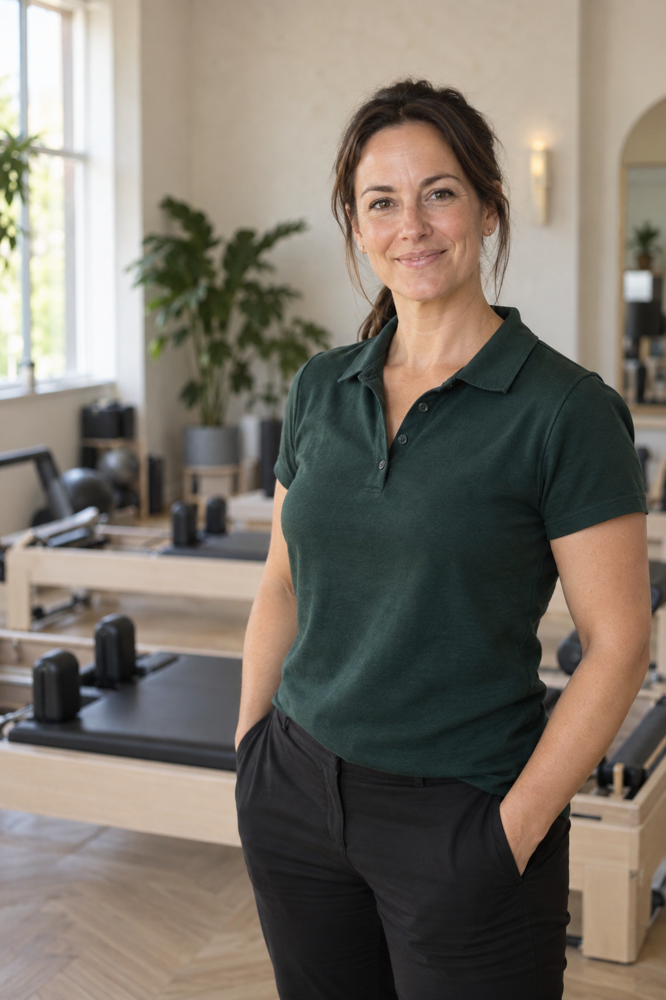
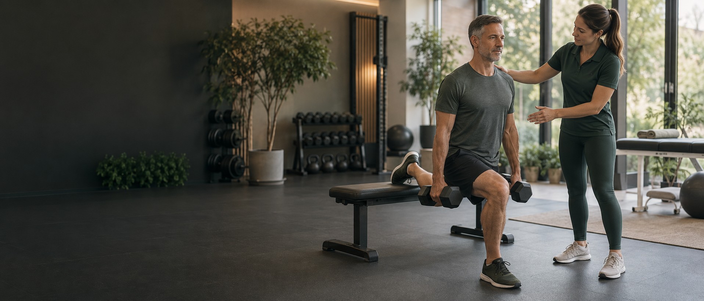

APPI Certified Pilates Instructor
10+ years teaching Mat and equipment-based Pilates.

ABOUT KAZ
I’m Karlene, a specialist musculoskeletal physiotherapist with 16 years’ NHS experience and over a decade teaching Reformer and Mat Pilates.
MY APPROACH
My aim is simple: to help you get back to the exercise, fitness and movement you enjoy.
You might be recovering from an operation, living with a long-term condition or dealing with pain that comes and goes. Or perhaps you’ve spent years being told to “be careful” or avoid certain movements — and have understandably lost confidence in what your body can do.
We’ll use Pilates, gym-based exercise and physiotherapy principles to create an approach that feels safe, progressive and completely individual to you.

EXPERIENCE & QUALIFICATIONS
10+ years teaching Mat and equipment-based Pilates.
16 years’ physiotherapy experience within the NHS.
4 years working in specialist spinal physiotherapy within the NHS.
Start with a 60-minute Physio Pilates assessment and we’ll work out the right next step for you.
Book your initial assessment →£80 · 60 minutes